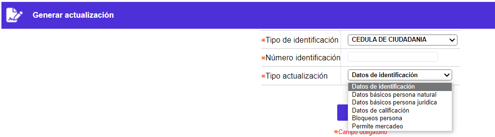
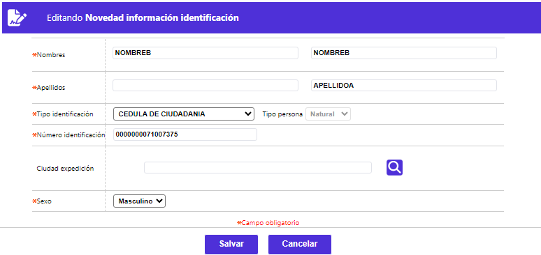
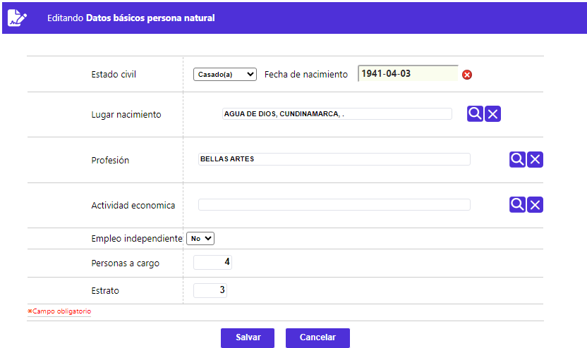
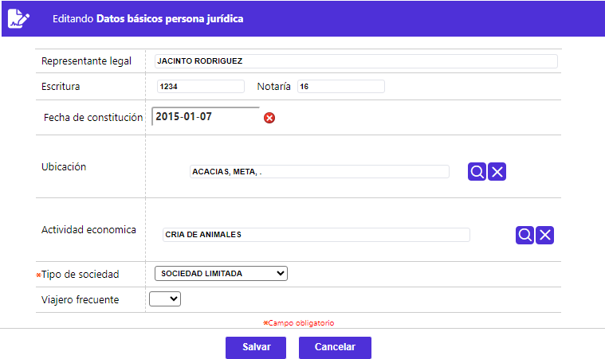
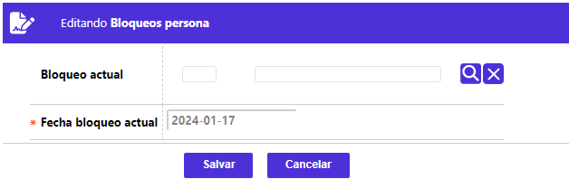
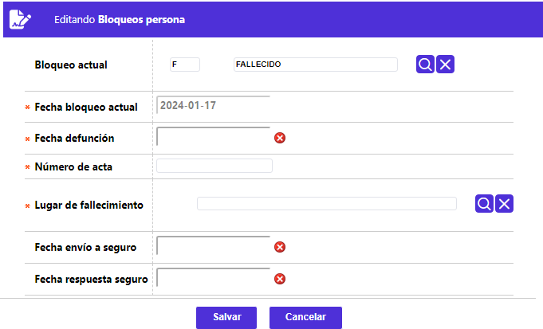
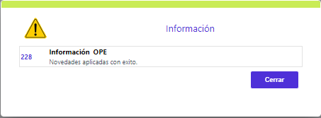

Generar novedad
Esta opción invocada desde el Núcleo / Información cliente, permite hacer el llamado a los diversos formularios desde los cuales se ingresan las modificaciones a la información relacionada con el cliente o tarjetahabiente, facilitando a la entidad mantener actualizados los datos de los mismos.

A diferencia de la mayoría de los formularios, este no contiene opciones adicionales y está conformado por tres campos en los cuales se registran los datos requeridos por el sistema para el ingreso de la novedad.
Descripción de campos
Tipo de identificación |
Campo obligatorio que posee lista de valores tipo combo, de la cual el usuario debe seleccionar el tipo de documento de identificación correspondiente al cliente para el cual se desea generar la novedad. |
Número de identificación |
Este campo obligatorio de hasta 16 posiciones en el cual se ingresa el número del documento de identificación del cliente. |
Tipo de actualización |
Campo obligatorio tipo combo del cual se selecciona el tipo de novedad que se desea generar para el cliente. |
Una vez ingresados los datos válidos requeridos y mediante el botón Buscar, el sistema invoca el formulario correspondiente de acuerdo con el tipo de novedad seleccionada por el usuario, el cual puede ser: Datos de identificación, Datos básicos persona natural, Datos básicos persona jurídica o Bloqueos persona.
Datos de identificación: Al seleccionar este tipo de novedad, el sistema despliega el siguiente formulario, en el que, el único campo no modificable es Tipo persona:

Descripción de campos
Nombres |
Dupla de campos, el primero obligatorio que, en máximo 60 caracteres, se debe ingresar el nuevo o correcto primer nombre de la persona natural. Para el segundo nombre de persona natural se dispone de 25 caracteres únicamente. |
Apellidos |
Dupla de campos, el primero obligatorio, que en máximo 20 caracteres, cada uno, dentro del(os) cual(es) se registra el(os) nuevo(s) o correcto(s) apellido(s) de la persona natural. |
Tipo identificación |
Campo obligatorio, que posee lista de valores tipo combo, de la cual debe seleccionarse, el nuevo o correcto tipo de identificación asociado al cliente, en reemplazo del actual. |
Número identificación |
Campo obligatorio, que en máximo 16 dígitos debe contener el nuevo o correcto número del documento de identificación asociado al cliente, para el que se está efectuando la modificación de sus datos. |
Ciudad Expedición |
Campo no obligatorio, que permite seleccionar de la lista de valores poblada en información geopolítica, el nuevo o correcto lugar de expedición del documento de identificación del cliente. |
Sexo |
Campo obligatorio, en el que mediante una lista de valores tipo combo, permite modificar de Femenino a Masculino, el género del cliente. |
Datos básicos persona natural: Al seleccionar este tipo de novedad, el sistema despliega el siguiente formulario, en el que, todos los campos son modificables:

Descripción de campos
Estado Civil |
Campo no obligatorio, en el que mediante una lista de valores tipo combo, de la cual seleccionar la nueva o correcta condición que defina el estado civil del cliente. |
Fecha Nacimiento |
Campo no obligatorio, en el que, mediante la funcionalidad de un calendario, permite registrar la nueva o correcta fecha de nacimiento del cliente. |
Lugar Nacimiento |
Campo no obligatorio, que permite seleccionar de la lista de valores poblada en información geopolítica, el nuevo o correcto lugar de nacimiento del cliente. |
Profesión |
Este campo no obligatorio, permite seleccionar de una lista de valores el nuevo o correcto tipo o nivel de estudios indicado por el cliente. |
Actividad económica |
Campo no obligatorio, permite seleccionar de una lista de valores la nueva o correcta actividad económica o código CIIU específico, señalado por el cliente. |
Empleo independiente |
Campo no obligatorio, que permite seleccionar entre Si o No, la nueva o correcta condición de dependencia laboral o fuente de ingresos informada por el cliente. |
Personas a Cargo |
En este campo numérico de 2 dígitos, no obligatorio, se registra el nuevo o correcto número de personas que dependen económicamente del cliente. |
Estrato |
Campo numérico de 1 posición, no obligatorio, que permite capturar la información correspondiente a la nueva o correcta estratificación social a la cual pertenece el cliente. |
Datos básicos persona jurídica:Al seleccionar este tipo de novedad, el sistema despliega el siguiente formulario, en el que, todos los campos son modificables:

Descripción de campos
Representante legal |
Campo alfanumérico, no obligatorio, permite registrar en máximo 60 caracteres, el nuevo o correcto nombre de la persona que hace las veces de representante legal de la sociedad. |
Escritura |
Campo alfanumérico, no obligatorio, permite registrar en máximo 10 caracteres, el nuevo o correcto número de la escritura pública, mediante la cual se constituyó la sociedad. |
Notaría |
Campo alfanumérico, no obligatorio, permite registrar en máximo 10 caracteres, el nuevo o correcto número la notaría ante la cual se elevó la escritura pública de constitución de la sociedad. |
Fecha de constitución |
Campo no obligatorio que ofrece la funcionalidad de un calendario, y permite definir, en formato AAAA-MM-DD, la nueva o correcta fecha de constitución de la sociedad. |
Ubicación |
Campo no obligatorio, que permite seleccionar de la lista de valores poblada a través de opción Ubicación geográfica, el nuevo o correcto municipio, en el que se encuentra localizada la sede principal o domicilio de la sociedad. |
Actividad económica |
Campo no obligatorio, que permite seleccionar de la lista de valores poblada a través de opción Actividad económica, la nueva o correcta actividad principal desarrollada por la sociedad, de acuerdo con su objeto social. |
Tipo de Sociedad |
Campo no obligatorio que posee lista de valores tipo combo, de la que es posible seleccionar el nuevo o correcto tipo de sociedad comercial bajo el cual se encuentra constituido el cliente persona jurídica. |
Bloqueos persona: Al seleccionar este tipo de novedad, el sistema despliega el siguiente formulario, en el que, si el usuario selecciona el código correspondiente a INCAPACIDAD TOTAL O PARCIAL de la lista de valores del campo Bloqueo actual, el sistema solo espera que se active el botón Salvar, si por el contrario selecciona el código asociado a FALLECIDO, se despliegan los campos adicionales abajo ilustrados:


Descripción de campos
Bloqueo Actual |
Campo no obligatorio en el que, mediante una lista de valores, se posibilita seleccionar entre FALLECIDO o INCAPACIDAD TOTAL O PARCIAL, el tipo de bloqueo persona a aplicar. |
Fecha Bloqueo Actual |
Campo obligatorio, por defecto despliega la fecha del sistema, en formato AAAA-MM-DD y no puede ser modificada. |
Fecha Defunción |
Campo obligatorio, en el que, mediante la funcionalidad de un calendario, permite registrar en formato AAAA-MM-DD la fecha en la que se produjo el deceso del cliente. |
Número Acta |
Campo alfanumérico de máximo 20 caracteres, obligatorio, en el que debe registrarse el dato que identifica el soporte o acta de defunción del cliente. |
Lugar de Fallecimiento |
Campo obligatorio, que permite seleccionar de la lista de valores poblada en información geopolítica, el municipio en que falleció el cliente. |
Fecha Envio a Seguro |
Campo no obligatorio, en el que, mediante la funcionalidad de un calendario, permite registrar en formato AAAA-MM-DD la fecha en la que se notifica a la compañía de seguros la reclamación por el deceso del cliente. |
Fecha Respuesta Seguro |
Campo no obligatorio, en el que, mediante la funcionalidad de un calendario, permite registrar en formato AAAA-MM-DD la fecha en la que la compañía de seguros da respuesta a la reclamación por el deceso del cliente. |
Una vez el usuario confirme o envíe los datos, de cualquiera de las anteriores novedades, mediante el botón Salvar, y el sistema valide su consistencia, retorna el siguiente mensaje notificando la aplicación de la misma:
